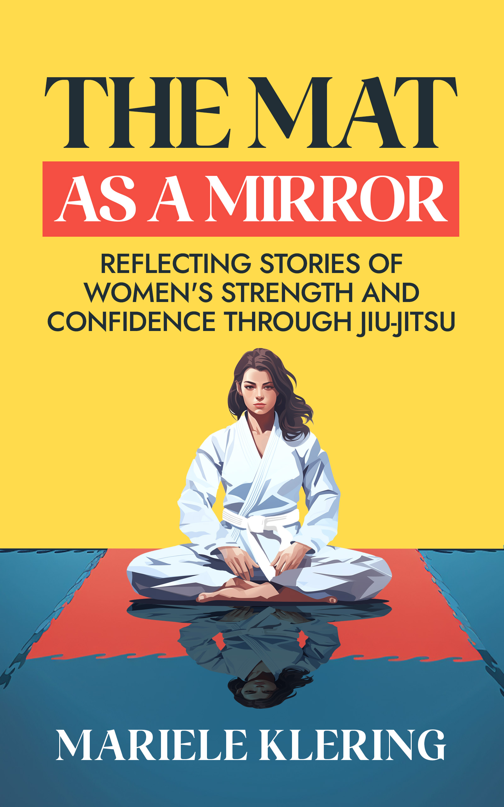
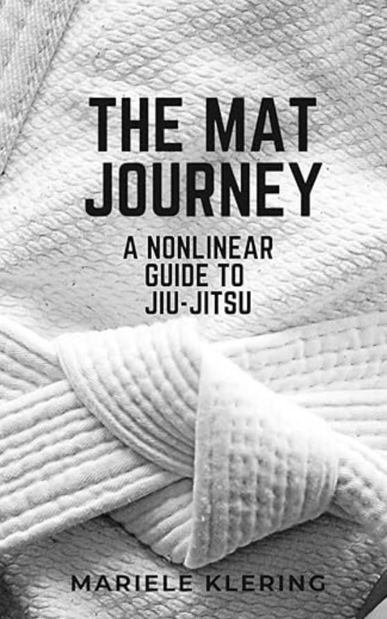

About
Mariele Klering
Mariele Klering is a Brazilian writer and resilience advocate based in New Zealand. She stepped onto the Jiu-Jitsu mat during a time of personal upheaval—and never left.
Her writing explores the intersections of strength, loss, identity, and the quiet power of doing hard things. She is the author of The Mat as a Mirror, a book about how movement can hold, challenge, and reshape us.
Her work has been featured in M2 Woman Magazine and the BJJHOOD podcast. In 2025 she was invited to deliver the keynote “Movement as the Language of Resilience” at M2 Woman’s sold-out Journey to Excellence forum in Auckland — bringing the philosophy of the mat to one of New Zealand’s most respected women’s leadership stages.
Books
Written Works

The Mat as a Mirror
Reflecting Stories of Women’s Strength and Confidence through Jiu-Jitsu
A powerful collection of stories exploring how Brazilian Jiu-Jitsu helped women navigate hardship, rebuild confidence, and rediscover themselves.
“This book is a raw and beautiful invitation to sit with our bruises and see them as maps of survival. Mariele writes with clarity, humility, and ferocity.”

The Mat Journey
A Nonlinear Guide to Jiu-Jitsu
A choose-your-own-path book for all belt levels. Part survival guide, part comedy relief, part philosophy of the mat. Not a manual, not a memoir — an open mat for your brain, your body, and your story.
“Whether you’re a white belt learning to survive or a black belt who still laughs at mat fails, this book will remind you why you keep coming back.”
As Featured In
Read the Full Article →“What started as a hesitant ‘okay’ to attend a self-defense seminar became something far bigger: a deep connection to Jiu-Jitsu… Mariele’s journey is deeply personal, yet profoundly universal.”
“With raw honesty, she shares personal excerpts alongside reflections on the transformative journey that changed her life… the mat wasn’t just a place to master grappling techniques—it became a space that mirrored life’s biggest lessons.”
On Stage
Speaking
Mariele speaks on resilience, identity, and what movement teaches us when we stop resisting it — bringing the mat's most honest lessons into the room.
Journey to Excellence · Keynote Speaker
Movement as the
Language of Resilience
Invited to speak at one of New Zealand's most respected women's leadership forums, Mariele took the stage at M2 Woman's sold-out Journey to Excellence to deliver a keynote unlike any other in the room. Rather than frameworks and slide decks, she brought the mat — and everything it demands of you.
Drawing on grief, the humility of being a perpetual beginner, and the quiet philosophy woven into Brazilian Jiu-Jitsu, she made the case that resilience isn't a trait you're born with — it's a practice built rep by rep, roll by roll. The talk wove together her father's death, her first steps onto the mat, and what all of it taught her about showing up when the world doesn't wait for you to be ready.
“Probably the most interesting and inspiring event I’ve been to, as far as the speakers and MC were concerned.”
Interested in having Mariele speak at your next event? Get in touch.